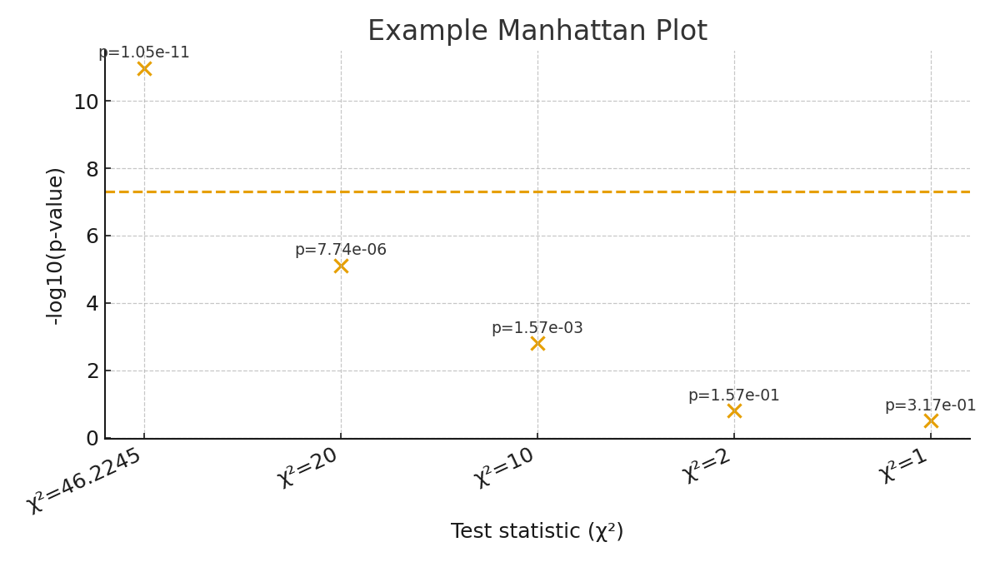
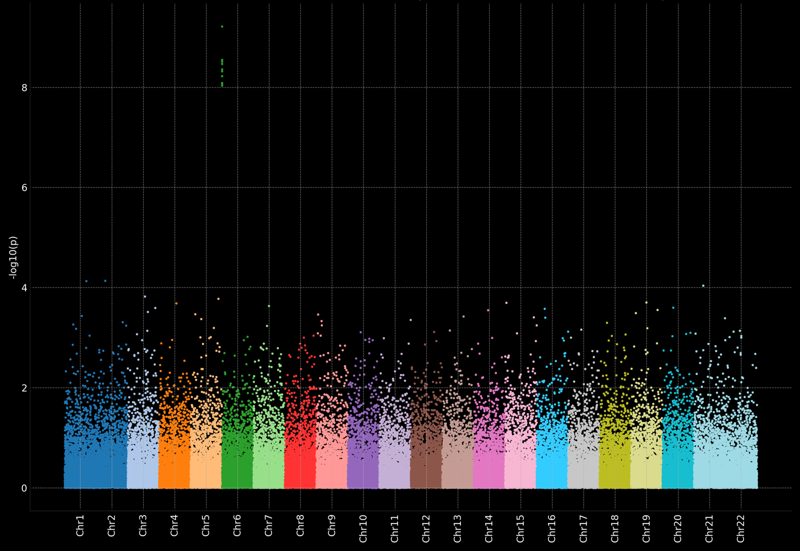

1. 我想干什么
单核苷酸多态性（SNP）广泛存在于生物的基因组，实际上，生物有不少性状都是由于一个SNP（就是基因上有1个碱基对不一样）而发生改变的，比如我们人类耳垢是油性的还是干燥的，就是由你染色体上的一个SNP决定。这样，我就可以得知你的许多信息。
2. 什么是相关性
相关性就是看两个事件间有没有关系，亦或独立，比如今天的天气好坏和昨天天气好坏就是相关的，而今天天气好坏和我晚上想吃什么就是无关的，或者是是独立的。在这里，我们笼统的用有关系和独立进行描述，但是我问你，男生女生与数学成绩有相关性吗？这种不好说的，我们会经过大量统计，通过数学推导出一个数值，来表示它们有多少相关性，从而将非黑即白的相关性得到了数学语言的精确描述。
3. 全基因组关联分析 GWAS
全基因组关联分析实际上就是找规律，例如继续以耳垢干与油这个性状为例，我们统计调查了许多人（就假设有1000个人吧），并且得到了这1000个人全基因组上的所有SNP（即单核苷酸多态性，这个1000人其实就是国际千人基因组计划）。现在我们需要对每一个SNP和耳垢干油进行分析，假设：
3.1 单核苷酸多态性 SNP
考虑到人是二倍体，理论上一个基因的SNP会有这么多种组合，考虑到两个同源染色体之间没有区分，16种可缩为10种（AT-TA和TA-AT是一样的）。
| AT | TA | CG | GC | |
|---|---|---|---|---|
| AT | AT-AT | AT-TA | AT-CG | AT-GC |
| TA | TA-AT | TA-TA | TA-CG | TA-GC |
| CG | CG-AT | CG-TA | CG-CG | CG-GC |
| GC | GC-AT | GC-TA | GC-CG | GC-GC |
但实际上，一个SNP就只有两种或者三种基因型组合，例如人类耳垢，决定其不同的SNP位于ABCC11基因上，只有三种状态，分别是TA-TA（干性耳垢），TA-CG和CG-CG（油性耳垢）。
3.2 简单性状的GWAS分析
在这里我们先看最简单的性状分析，继续以耳垢的干性和油性举例，并忘掉我们已知的SNP位点，我们测得了1000个人的全部基因组，为了简化例子，我们就假设在一个染色体上发现了5个SNP位点，并且假设这5个SNP都只有两类：TA-TA和CG-CG，我们探究哪个SNP位点与耳垢的干和油相关。
对于第一个SNP位点，我们得到这样的统计：
| TA-TA | CG-CG | 总计($R_i$) | |
|---|---|---|---|
| 干耳垢 | $O_{11}=334$ | $O_{12}=276$ | $R_1=610$ |
| 油耳垢 | $O_{21}=124$ | $O_{22}=266$ | $R_2=390$ |
| 总计($C_j$) | $C_1=458$ | $C_2=542$ | $T=1000$ |
这是典型的一个2×2列联表的独立性检验，我们进行卡方检验：
- 确定假设：
- 确定显著性：α=0.01
- 计算$\chi^2$值：
- 查表，$df=1$时，$\chi^2_{0.01}=6.63$，而$\chi^{2}_{c}=46.2245>\chi^2_{0.01}$，发生了小概率事件，认为是有显著性独立性，因此在$α=0.01$的水平上，拒绝$H_0$，接受$H_1$。
$H_0$：耳垢干与油和这个SNP没有关系
$H_1$：耳垢干与油和这个SNP有关系
先计算联表中各项的理论值列于理论值表中：
第一个SNP为TA-TA且为干耳垢：
$$E_{11} = \frac{R_{1}C_{1}}{T} = \frac{610 \times 458}{1000} = 279.38$$
第一个SNP为CG-CG且为干耳垢：
$$E_{12} = \frac{R_{1}C_{2}}{T} = \frac{610 \times 542}{1000} = 330.62$$
第一个SNP为CG-CG且为油耳垢：
$$E_{21} = \frac{R_{2}C_{1}}{T} = \frac{390 \times 458}{1000} = 178.62$$
第一个SNP为TA-TA且为油耳垢：
$$E_{22} = \frac{R_{2}C_{2}}{T} = \frac{390 \times 542}{1000} = 211.38$$
列出理论联表：
| TA-TA | CG-CG | 总计($R_i$) | |
|---|---|---|---|
| 干耳垢 | $E_{11}=279.38$ | $E_{12}=330.62$ | $R_1=610$ |
| 油耳垢 | $E_{21}=178.62$ | $E_{22}=211.38$ | $R_2=390$ |
| 总计($C_j$) | $C_1=458$ | $C_2=542$ | $T=1000$ |
计算自由度：
$$df = (R-1)(C-1) = (2-1)×(2-1) = 1$$
由于自由度为1，需要进行连续性矫正，此时统计量$\chi^2$的计算公式为：
$$ \begin{aligned} \chi^{2}_{c} &= \sum_{i=1, j=1}^{k} \frac{(|O_{ij}-E_{ij}|-0.5)^2}{E_{ij}} \\\\ &= \frac{(|334-279.38|-0.5)^2}{279.38} + \frac{(|276-330.62|-0.5)^2}{330.62} + \frac{(|124-178.62|-0.5)^2}{178.62} + \frac{(|266-211.38|-0.5)^2}{279.38} \\\\ &= 10.48384 + 8.85904 + 16.39780 + 10.48384 = 46.2245 \end{aligned} $$
实际上，我们不会根据第四步去判断受否拒绝$H_0$，而是直接计算出$H_0$发生的概率，毕竟现在计算水平那么高，一个定积分计算机还是能轻易算出来的：
对自由度为1的卡方分布的概率密度函数进行46.2245到无穷大积分：
$$ P(\chi^2_c \ge 46.2245) = \int_{46.2245}^{+\infty} f_1(t) \, dt = \int_{46.2245}^{+\infty} \frac{1}{\sqrt{2\pi t}} e^{-t/2} \, dt $$
该积分结果约为：
$$ \alpha_1 = P(\chi^2_c \ge 46.2245) \approx 1.0545 \times 10^{-11} $$
对另外4个SNP也进行同样的操作，在这里假设：
$$ \alpha_2 = P(\chi^2_c \ge 20) = \int_{20}^{+\infty} \frac{1}{\sqrt{2\pi t}} e^{-t/2} \, dt\approx 7.7442 \times 10^{-6} $$
$$ \alpha_3 = P(\chi^2_c \ge 10) = \int_{10}^{+\infty} \frac{1}{\sqrt{2\pi t}} e^{-t/2} \, dt\approx 1.5654 \times 10^{-3} $$
$$ \alpha_4 = P(\chi^2_c \ge 2) = \int_{2}^{+\infty} \frac{1}{\sqrt{2\pi t}} e^{-t/2} \, dt\approx 1.5730 \times 10^{-1} $$
$$ \alpha_5 = P(\chi^2_c \ge 1) = \int_{1}^{+\infty} \frac{1}{\sqrt{2\pi t}} e^{-t/2} \, dt\approx 3.1731 \times 10^{-1} $$
假设这5个SNP依次分布在同一条染色体上，那么我们就可以画出一个散点图：
其中我们常用阈值为$p=5×10^{-8}$，当这个SNP的p值高于这个阈值时，我们认为这个SNP和这个性状有强相关性。
3.3 实际上的GWAS
以上为一个非常简单的GWAS分析示例，实际上，我们会分析会在人类23对染色体中所有的SNP并进行独立性检验，而独立性检验方式并不一定都是2×2列联分析，这个我们稍后会提及。经过分析，我们会得到成千上万的SNP，将不同染色体的SNP依次排开，我们就会得到像曼哈顿城市群一样的散点图，所以我们经过GWAS得到的图叫做曼哈顿图，图中的每一个小点都代表着一个SNP，它的纵坐标就代表着它与我们要分析的性状的相关性可能的大小。
这个是模拟出来的科研中的例图，其与上面的举例图只有点的个数的区别：
3.4 更复杂GWAS
在我们的例子中，我们粗暴的将耳垢分为干和油，但是实际上好多特征都不能如此简单粗暴的划分，比如某种植物的花有红橙黄三种颜色（我们分成了三种），亦或者是人类的身高（这个直接无法量子化了）。同时，SNP位点也有多种可能性，需要进行一一分析。
3.4.1 可量子化特征研究
首先SNP位点一定是量子化的，它就只有那10种类型，当特征也可以量子化时，例如耳垢（干/油），眼皮（单/双），头发（直/卷），豌豆（甜/不甜），花色（红/橙/黄），果实大小（大/中/小），我们用R×C列联表分析就够了：
$$\chi^2=T[\sum(\frac{O_{ij}^{2}}{R_iC_j})-1]$$
$$df=(R-1)(C-1)$$
注意自由度为1时需要连续性矫正：
$$ \chi^{2}_{c} = \sum_{i=1, j=1}^{k} \frac{(|O_{ij}-E_{ij}|-0.5)^2}{E_{ij}} $$
3.4.2 非量子化特征研究
例如身高，体重，果实重量，寿命等，你不想量子化分析或者不方便量子化分析时，我们就不能用列联表分析。这是使用 线性回归 或者 logistic 回归进行分析，本次不作深入讨论。
4. 你不得不知道的一些事
- 注意，GWAS分析的仅是相关性，它并不能揭示它们两内在确实存在某种联系，你不光可以分析耳垢和SNP的关系，你可以分析任何你感兴趣的特征与SNP之间的关系，比如躁郁症和SNP的关系，甚至你可以分析喜不喜欢吃汉堡包和SNP之间的关系。总之，你能把看似和基因完全没有一点关系的事物都拿来做一下GWAS分析，但是请牢记：GWAS只是粗暴的将你观察到的现象和基因强行联系到了一起，其具体是由什么通路，机制导致的是你发现这个显著的SNP后应该进一步去研究的。
- 我们可能会得到多个具有超过阈值显著性的SNP位点，这个时候，我们要将研究重点放在显著性最明显的那个位点上，其它位点根据科研精力和时间进行取舍性研究。